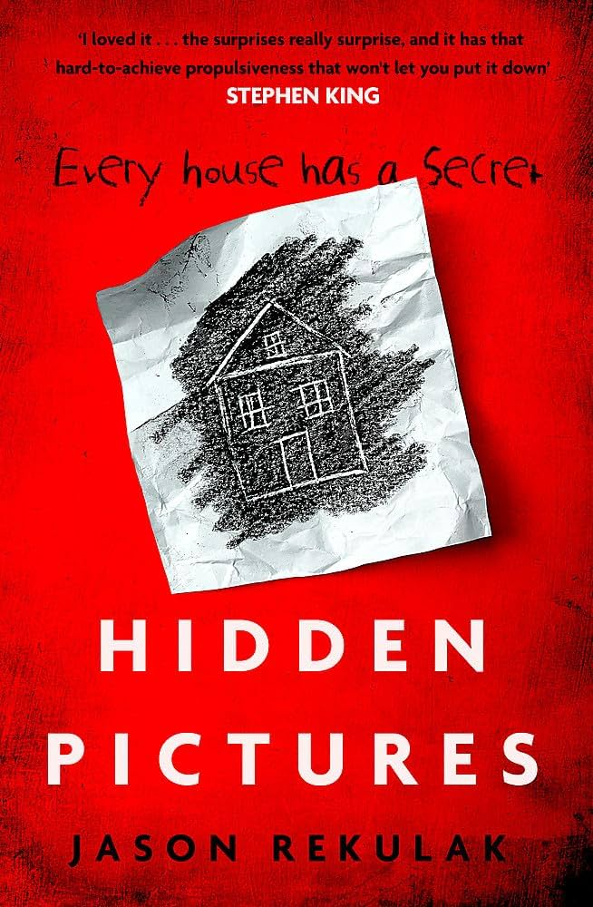
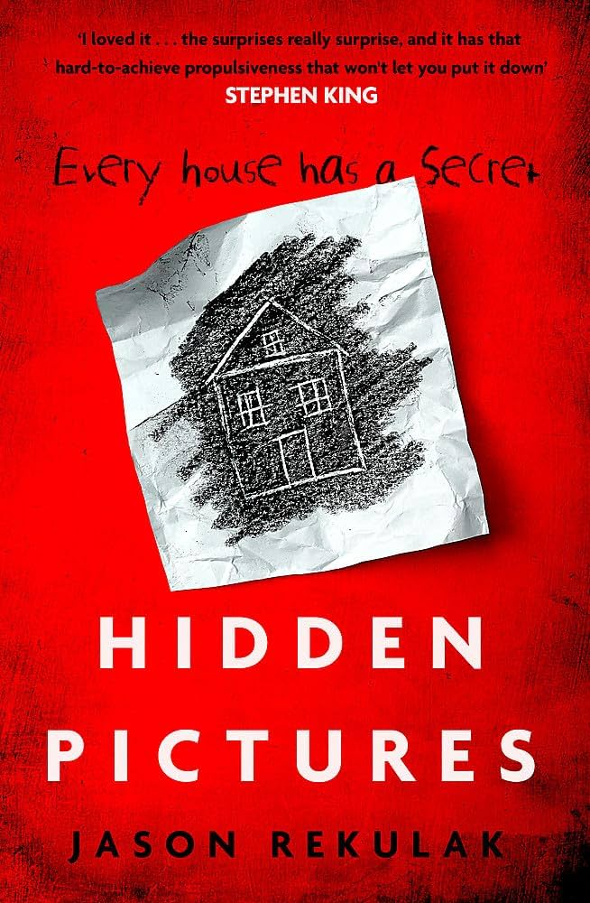
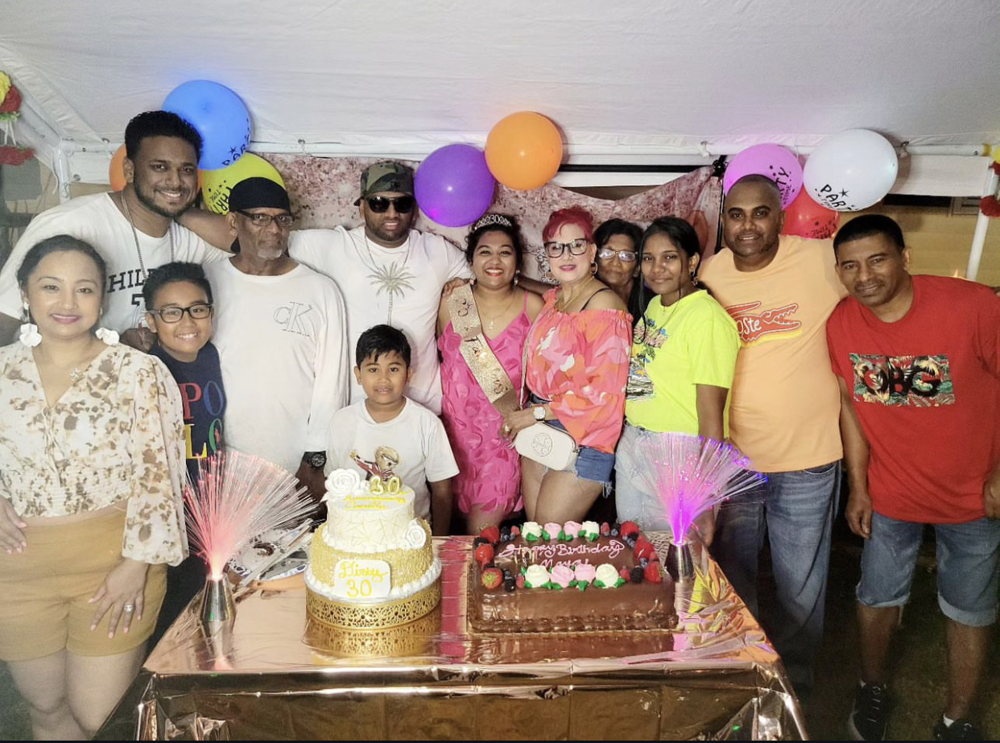
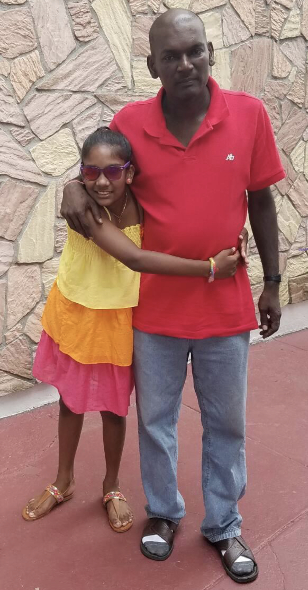
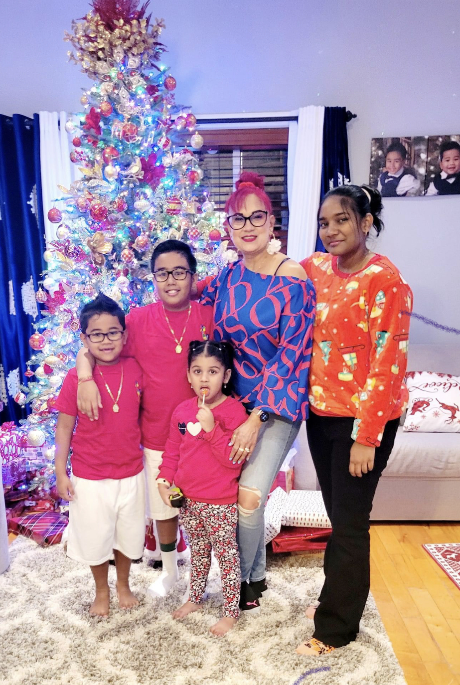

Hi,my name is Careshma as you can tell on my homepage! I like to watch movies, read books, and travel (even though I don't travel a lot) My favorite genre of book that I like to read is psychological thrillers. If you are interested in this topic, I would recommend these books below! I am an only child and I was born on July 4th 2006! In the future I hope to become successful and rich in knowlegde!
Book Recs
 

Here are some pictures of my family and I. We love to celebrate holidays together! One of my favorite holidays is christmas because we open presents, eat good food, and most importantly watch christmas movies! Although, everyone is busy due to their daily routine and work, when we come together we try to make it a memorable moment!
  My journey throughout Web Development has been a wild ride. In sophomore year, I felt like I knew nothing about coding and I was struggling because I didn't really understand coding that much. When I was completing my projects, I made a lot of mistakes in my code and it felt frustrating. I would sometimes spend a lot of time on my code and it wouldn't work! Even though, I had struggles it helped me to grow and become a better coder. I am much better at fixing my mistakes and remaining calm when the code doesn't look right or work. In Junior year I was able to look back at my past projects and elevate it to create better projects! So far, senior year is going well, I hope to learn more and gain more experience with coding and desiging websites.